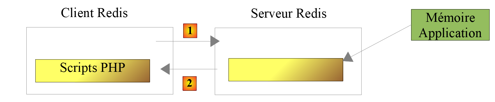

20. Exercice d'application – version 10
La version précédente a montré que les données fiscales, partagées par tous les utilisateurs de l'application, devraient être stockées dans une mémoire de portée [application]. Nous allons utiliser un serveur Redis (https://redis.io) pour implémenter celle-ci.
20.1. Redis
Redis est un serveur qui garde en mémoire des données sous la forme de couples [clé, valeur]. Il est très rapide et très utilisé par les applications web comme cache, c'est-à-dire comme mémoire de données coûteuses à obtenir. La mémoire de portée [application] sera implémentée par un serveur Redis. Les scripts PHP ayant besoin de cette mémoire d'application seront des clients de ce serveur :

- en [1], un script PHP envoie une commande au serveur Redis, par exemple pour lui demander la valeur associée à une clé ;
- en [2], le serveur Redis lui répond .
Le serveur Redis vit indépendamment des scripts PHP : les données qu'on lui confie restent disponibles d'une requête à l'autre, et pour tous les utilisateurs de l'application.
20.2. Installation de Redis
[Laragon] vient avec un serveur Redis non activé par défaut. On l'active dans les préférences de [Laragon] (menu [Preferences], onglet [Services & Ports]) en cochant la case [Redis]. On laisse le port [6379] que les clients Redis utilisent par défaut. Le serveur Redis est alors lancé avec les autres services de [Laragon] (Apache, MySQL...) par le bouton [Start All].
20.3. Le client Redis en mode commande
Le serveur Redis peut être interrogé en mode commande. On ouvre un terminal [Laragon] et on tape la commande [redis-cli], qui lance le client en mode commande du serveur Redis. Le client affiche alors l'invite [127.0.0.1:6379>] : il est connecté au serveur Redis de la machine locale (adresse IP 127.0.0.1), sur le port 6379. Voici une session de travail :
| > redis-cli
127.0.0.1:6379> command count
(integer) 240
127.0.0.1:6379> set titre "PHP 8 par l'exemple"
OK
127.0.0.1:6379> get titre
"PHP 8 par l'exemple"
127.0.0.1:6379> exists titre
(integer) 1
127.0.0.1:6379> del titre
(integer) 1
127.0.0.1:6379> get titre
(nil)
127.0.0.1:6379> exists titre
(integer) 0
127.0.0.1:6379> quit
|
- ligne 3 : le client Redis dispose de plus de 200 commandes pour dialoguer avec le serveur. L'une d'elles, [command count], affiche leur nombre exact pour la version utilisée ;
- lignes 4-7 : nous n'allons présenter que celles dont nous allons avoir besoin dans notre application PHP. Nous allons utiliser Redis pour une unique chose : associer une valeur à une clé dans la mémoire de Redis. Cela se fait avec la commande Redis [set clé valeur]. La valeur peut ensuite être récupérée avec la commande [get clé]. C'est tout ce dont nous aurons besoin ;
- lignes 8-9 : la commande [exists] permet de vérifier l'existence d'une clé : elle rend 1 si la clé existe, 0 sinon ;
- lignes 10-11 : la commande [del] supprime une clé ;
- lignes 12-13 : si on demande la valeur d'une clé inexistante, on obtient la valeur [nil] indiquant que la clé n'a pas été trouvée ;
- ligne 16 : pour quitter le client Redis, on tape la commande [quit] .
Il peut être nécessaire de vider toute la mémoire de Redis. Cela se fait avec la commande [flushdb].
20.4. Installation d'un client Redis pour PHP
Il nous faut maintenant un client Redis pour PHP. Il en existe deux principaux :
- l'extension PHP [phpredis], écrite en C, qu'il faut ajouter à la configuration de PHP ;
- la bibliothèque [Predis] (https://github.com/predis/predis), écrite en PHP, qui s'installe avec [Composer] .
Comme le cours PHP 7, nous utiliserons [Predis], dans sa version 3. Elle figure dans le fichier [composer.json] du dossier [php8-oct-2026] et a été installée avec les autres bibliothèques du cours par la commande [composer install]. On la trouve dans le dossier [vendor/predis/predis]. Le chargeur de classes de [Composer] la prend en charge : il n'y a plus, comme dans le cours PHP 7, de fichier [predis/autoload.php] à inclure ni de méthode [Predis\Autoloader::register] à appeler.
20.5. Code du serveur
Le serveur de la version 10 est formé des fichiers suivants :
| scripts-web/impots/version-10
├── Data
│ ├── .htaccess
│ ├── config-server.json
│ └── logs.txt
└── impots-server.php
|
Le fichier de configuration [config-server.json] évolue de la façon suivante :
| {
"databaseFilename": "../version-08/Data/database-mysql.json",
"dependencies": [
"../../../scripts-console/impots/version-05/Entities/ExceptionImpots.php",
"../../../scripts-console/impots/version-05/Entities/TaxAdminData.php",
"../../../scripts-console/impots/version-05/Entities/Database.php",
"../../../scripts-console/impots/version-05/Utilities/Utilitaires.php",
"../version-08/Dao/InterfaceServerDao.php",
"../version-08/Dao/ServerDao.php",
"../version-09/Dao/ServerDaoWithSession.php",
"../version-08/Metier/InterfaceServerMetier.php",
"../version-08/Metier/ServerMetier.php",
"../version-09/Utilities/Logger.php",
"../version-09/Utilities/SendAdminMail.php"
],
"users": [
{
"login": "admin",
"passwd": "admin"
}
],
"adminMail": {
"smtp-server": "localhost",
"smtp-port": 1025,
"from": "guest@localhost",
"to": "guest@localhost",
"subject": "plantage du serveur de calcul d'impôts",
"tls": false,
"attachments": []
},
"logsFilename": "Data/logs.txt",
"redis": {
"scheme": "tcp",
"host": "127.0.0.1",
"port": 6379
}
}
|
Commentaires
- lignes 3-15 : la version 10 n'amène rien de nouveau en dehors du script [impots-server.php]. Elle utilise des éléments des versions 5, 8 et 9 ;
- lignes 32-37 : les paramètres de connexion au serveur Redis : le protocole (tcp), la machine et le port. Ce sont les valeurs par défaut de [Predis], mais il vaut mieux les écrire dans la configuration : si le serveur Redis change de machine ou de port, seule la configuration est à modifier .
Le code du serveur [impots-server.php] évolue de la façon suivante :
| <?php
// respect strict des types déclarés des paramètres et des résultats des fonctions
declare(strict_types=1);
// espace de noms
namespace Application;
// dépendances Symfony
use Symfony\Component\HttpFoundation\JsonResponse;
use Symfony\Component\HttpFoundation\Request;
use Symfony\Component\HttpFoundation\Response;
use Symfony\Component\HttpFoundation\Session\Session;
// dépendances Predis
use Predis\Client as RedisClient;
use Predis\PredisException;
// alias de classe : la couche [dao] de la version 9 est utilisée avec Redis
use Application\ServerDaoWithSession as ServerDaoWithRedis;
// les erreurs de PHP ne sont pas envoyées au client (elles vont dans le journal du serveur web)
ini_set("display_errors", "0");
// le dossier racine du serveur : les chemins du fichier de configuration sont relatifs à ce dossier
const ROOT_DIRECTORY = __DIR__;
// chemin du fichier de configuration
const CONFIG_FILENAME = ROOT_DIRECTORY . "/Data/config-server.json";
// on récupère la configuration
$config = json_decode(file_get_contents(CONFIG_FILENAME), true, flags: JSON_THROW_ON_ERROR);
// on inclut les dépendances nécessaires au script
require_once ROOT_DIRECTORY . "/../../../vendor/autoload.php";
foreach ($config["dependencies"] as $dependency) {
require_once ROOT_DIRECTORY . "/$dependency";
}
// session : elle ne contient plus que l'identifiant de l'utilisateur authentifié
$session = new Session();
$session->start();
// création du fichier des logs
try {
$logger = new Logger(ROOT_DIRECTORY . "/" . $config["logsFilename"]);
} catch (ExceptionImpots $ex) {
// erreur 500 sans logs - le message ne doit pas révéler l'arborescence des fichiers du serveur
$message = "Echec lors de la création du fichier de logs [{$config["logsFilename"]}]";
doInternalServerError($message, $config["adminMail"]);
// terminé
exit;
}
// 1er log
$logger->write("---nouvelle requête");
// on récupère la requête courante
$request = Request::createFromGlobals();
// authentification seulement la 1re fois
if (!$session->has("user")) {
// log
$logger->write("Authentification en cours…");
// les identifiants envoyés par le client (null s'il n'en a pas envoyé)
$requestUser = $request->getUser();
$requestPassword = $request->getPassword();
// l'utilisateur fait-il partie des utilisateurs autorisés ?
$trouvé = $requestUser !== null && $requestPassword !== null
&& array_any(
$config["users"],
fn(array $user): bool => $user["login"] === $requestUser && hash_equals($user["passwd"], $requestPassword)
);
if (!$trouvé) {
// pas trouvé - code 401
sendResponse(
["erreur" => "Echec de l'authentification [$requestUser]"],
Response::HTTP_UNAUTHORIZED,
["WWW-Authenticate" => 'Basic realm="Serveur de calcul des impots"'],
$logger
);
// terminé
exit;
}
// on note dans la session qu'on a authentifié l'utilisateur
$session->set("user", $requestUser);
// log
$logger->write("Authentification réussie [$requestUser]");
} else {
// log
$logger->write("Authentification prise en session…");
}
// on a un utilisateur valide - on vérifie les paramètres reçus
$erreurs = [];
// on doit avoir une requête GET avec trois paramètres
if ($request->getMethod() !== "GET" || $request->query->count() !== 3) {
$erreurs[] = "Méthode GET requise avec les seuls paramètres [marié, enfants, salaire]";
}
// le statut marital
if (!$request->query->has("marié")) {
$erreurs[] = "paramètre marié manquant";
} else {
$marié = strtolower(trim($request->query->getString("marié")));
if (!in_array($marié, ["oui", "non"], true)) {
$erreurs[] = "paramètre marié [$marié] invalide";
}
}
// le nombre d'enfants et le salaire : des nombres entiers >= 0
$valeurs = [];
foreach (["enfants", "salaire"] as $paramètre) {
if (!$request->query->has($paramètre)) {
$erreurs[] = "paramètre $paramètre manquant";
continue;
}
$valeur = trim($request->query->getString($paramètre));
if (preg_match('/^\d+$/', $valeur) !== 1) {
$erreurs[] = "paramètre $paramètre [$valeur] invalide";
} else {
$valeurs[$paramètre] = (int) $valeur;
}
}
// autres paramètres dans la requête ?
foreach (array_diff(array_keys($request->query->all()), ["marié", "enfants", "salaire"]) as $paramètre) {
$erreurs[] = "paramètre [$paramètre] invalide";
}
// erreurs ?
if ($erreurs !== []) {
// on envoie un code d'erreur 400 au client
sendResponse(["erreurs" => $erreurs], Response::HTTP_BAD_REQUEST, [], $logger);
// terminé
exit;
}
// log
[$enfants, $salaire] = [$valeurs["enfants"], $valeurs["salaire"]];
$logger->write("paramètres ['marié'=>$marié, 'enfants'=>$enfants, 'salaire'=>$salaire] valides");
// on a tout ce qu'il faut pour travailler
// la mémoire de portée [application] : un serveur Redis
try {
// le client Redis
$redis = new RedisClient($config["redis"]);
// on se connecte tout de suite au serveur pour savoir s'il est là
$redis->connect();
} catch (PredisException $ex) {
// erreur 500
doInternalServerError("[redis], {$ex->getMessage()}", $config["adminMail"], $logger);
// terminé
exit;
}
// création de la couche [dao]
$json = $redis->get("taxAdminData");
if ($json === null) {
// les données fiscales sont prises dans la base de données
$logger->write("données fiscales prises en base de données");
try {
// construction de la couche [dao]
$dao = new ServerDaoWithRedis(ROOT_DIRECTORY . "/" . $config["databaseFilename"]);
// on met la chaîne JSON des données fiscales dans la mémoire de portée [application]
$redis->set("taxAdminData", (string) $dao->getTaxAdminData());
} catch (ExceptionImpots $ex) {
// erreur 500
doInternalServerError("[dao], {$ex->getMessage()}", $config["adminMail"], $logger, $redis);
// terminé
exit;
}
} else {
// les données fiscales sont prises dans la mémoire de portée [application]
$taxAdminData = TaxAdminData::fromArray(json_decode($json, true, flags: JSON_THROW_ON_ERROR));
// instanciation de la couche [dao]
$dao = new ServerDaoWithRedis($taxAdminData);
// log
$logger->write("données fiscales prises dans Redis");
}
// création de la couche [métier]
$métier = new ServerMetier($dao);
// calcul de l'impôt
$result = $métier->calculerImpot($marié, $enfants, $salaire);
// on rend la réponse
sendResponse($result, Response::HTTP_OK, [], $logger, $redis);
// fin
exit;
// --------------------------------------------------------------------------
// erreur fatale : un mail à l'administrateur et une réponse 500 au client
function doInternalServerError(
string $message,
array $adminMail,
?Logger $logger = null,
?RedisClient $redis = null
): void {
// le message d'erreur d'un pilote de SGBD peut ne pas être codé en UTF-8 (Windows-1252 sous Windows)
if (!mb_check_encoding($message, "UTF-8")) {
$message = mb_convert_encoding($message, "UTF-8", "Windows-1252");
}
// on envoie un mail à l'administrateur
// [SendAdminMail] intercepte toutes les exceptions et les logue lui-même
(new SendAdminMail($adminMail, $logger))->send($message);
// on envoie un code d'erreur 500 au client
sendResponse(["erreur" => $message], Response::HTTP_INTERNAL_SERVER_ERROR, [], $logger, $redis);
}
// envoi de la réponse HTTP au client
// $result : le tableau à envoyer, sous la forme ["réponse" => $result]
// $statusCode : le statut HTTP de la réponse
// $headers : des entêtes HTTP à ajouter à la réponse
// $logger : le journal de l'application (null s'il n'a pu être créé)
// $redis : le client Redis (null s'il n'a pas encore été créé)
function sendResponse(
array $result,
int $statusCode,
array $headers = [],
?Logger $logger = null,
?RedisClient $redis = null
): void {
// la réponse JSON
$response = new JsonResponse(null, $statusCode, $headers);
$response->setEncodingOptions(JSON_UNESCAPED_UNICODE | JSON_UNESCAPED_SLASHES | JSON_PRESERVE_ZERO_FRACTION);
$response->setData(["réponse" => $result]);
// envoi
$response->send();
// log
$logger?->write($response->getContent());
// fermeture de la connexion au serveur Redis
$redis?->disconnect();
}
|
Commentaires
- lignes 15-16 : les classes de [Predis] que nous utilisons. La classe [Predis\Client] est le client Redis. Nous lui donnons l'alias [RedisClient], plus parlant dans notre code. [PredisException] est la classe parent de toutes les exceptions lancées par [Predis] ;
- ligne 18 : on donne l'alias [ServerDaoWithRedis] à la classe [ServerDaoWithSession] de la version 9 pour refléter le changement d'implémentation du script serveur. La classe [ServerDaoWithSession] sait construire la couche [dao] à partir de données fiscales déjà acquises : peu lui importe qu'elles viennent d'une session ou d'un serveur Redis ;
- lignes 38-39 : la session est conservée. Nous avons ici deux informations à mémoriser :
- le fait que l'utilisateur se soit authentifié correctement. Cette information est de portée [session] : elle est liée à un utilisateur précis et n'est pas valable pour les autres utilisateurs. Elle reste dans la session ;
- les données de l'administration fiscale. Cette information est de portée [application] : elle n'est pas liée à un utilisateur précis mais est valable pour tous les utilisateurs. Elle va dans le serveur Redis ;
- lignes 135-145 : création du client [Predis] qui va communiquer avec le serveur Redis, avec les paramètres de connexion du fichier de configuration :
- ligne 140 : on connecte tout de suite le client au serveur pour savoir si celui-ci répond ;
- si la connexion au serveur Redis échoue, on envoie une réponse d'erreur au client et un mail à l'administrateur de l'application. Le message d'erreur est préfixé par [[redis]] pour indiquer d'où vient l'erreur ;
- ligne 148 : on demande au serveur Redis la valeur de la clé [taxAdminData]. Le client [Predis] offre une méthode pour chaque commande Redis : la méthode [get] envoie la commande [get taxAdminData]. Elle rend la valeur de la clé, ou [null] si elle n'existe pas ;
- ligne 149 : si la clé n'est pas trouvée, alors les données fiscales sont prises en base de données ;
- ligne 156 : la clé [taxAdminData] est placée dans la mémoire de Redis, associée à la chaîne JSON de l'objet [TaxAdminData] obtenu de la couche [dao]. La méthode [set] attend une chaîne de caractères pour la valeur de la clé. La conversion [(string)] appelle la méthode [__toString] de la classe [TaxAdminData], qui rend la chaîne JSON de l'objet. Le script PHP 7 laissait PHP faire cette conversion implicitement ; avec [declare(strict_types=1)], il vaut mieux l'écrire ;
- ligne 159 : si la lecture de la base échoue, réponse 500 et mail à l'administrateur, le message étant préfixé par [[dao]] ;
- lignes 164-169 : la clé [taxAdminData] est dans la mémoire de Redis. On sait que sa valeur est la chaîne JSON d'un objet [TaxAdminData] :
- ligne 165 : on décode la chaîne JSON en tableau associatif, puis la méthode statique [TaxAdminData::fromArray] de la version 5 construit l'objet [TaxAdminData] à partir de ce tableau, en vérifiant ses données ;
- ligne 167 : la couche [dao] est instanciée avec ces données ;
- lignes 182-187 : la fonction [doInternalServerError] a un paramètre de plus, le client Redis, qu'elle transmet à la fonction [sendResponse]. Lorsqu'une fonction a de nombreux paramètres, on les écrit un par ligne ;
- ligne 221 : la fonction [sendResponse] ferme la connexion au serveur Redis, si elle a été ouverte .
20.6. Code du client
La version 10 du client est identique à la version 9. Seul change le fichier de configuration [config-client.json] :
| {
"urlServer": "http://localhost/php8-oct-2026/scripts-web/impots/version-10/impots-server.php",
"user": {
"login": "admin",
"passwd": "admin"
},
"httpClientOptions": {
"verify_peer": false,
"verify_host": false
},
"taxPayersDataFilename": "Data/taxpayersdata.json",
"resultsFilename": "Data/results.json",
"errorsFilename": "Data/errors.json",
"dependencies": [
"../version-05/Entities/ExceptionImpots.php",
"../version-05/Entities/TaxPayerData.php",
"../version-05/Utilities/Utilitaires.php",
"../version-05/Dao/TraitDao.php",
"../version-08/Dao/InterfaceClientDao.php",
"../version-09/Dao/ClientDao.php",
"../version-08/Metier/InterfaceClientMetier.php",
"../version-08/Metier/ClientMetier.php"
]
}
|
- ligne 2 : l'URL du serveur de la version 10 ;
- ligne 20 : la couche [dao] du client est celle de la version 9 .
Le dossier [scripts-console/impots/version-10] contient donc seulement le dossier [Data], le script principal [Main/MainImpotsClient.php] (celui de la version 8) et le test [Tests/ClientMetierTest.php].
Avant d'exécuter le client, supprimons la clé [taxAdminData] de la mémoire du serveur Redis avec la commande [del taxAdminData] de [redis-cli]. Puis exécutons le client :
| > php MainImpotsClient.php
Les résultats ont été enregistrés dans le fichier [Data/results.json]
Terminé
|
Les résultats sont les mêmes que dans la version 9. Les logs du serveur sont les suivants :
| 01/10/26 18:10:12.890 : ---nouvelle requête
01/10/26 18:10:12.891 : Authentification en cours…
01/10/26 18:10:12.891 : Authentification réussie [admin]
01/10/26 18:10:12.891 : paramètres ['marié'=>oui, 'enfants'=>2, 'salaire'=>55555] valides
01/10/26 18:10:12.907 : données fiscales prises en base de données
01/10/26 18:10:12.909 : {"réponse":{"impôt":2814,"surcôte":0,"décôte":0,"réduction":0,"taux":0.14}}
01/10/26 18:10:12.912 : ---nouvelle requête
01/10/26 18:10:12.912 : Authentification prise en session…
01/10/26 18:10:12.912 : paramètres ['marié'=>oui, 'enfants'=>2, 'salaire'=>50000] valides
01/10/26 18:10:12.913 : données fiscales prises dans Redis
01/10/26 18:10:12.913 : {"réponse":{"impôt":1384,"surcôte":0,"décôte":384,"réduction":347,"taux":0.14}}
01/10/26 18:10:12.916 : ---nouvelle requête
…
|
- ligne 5 : lors de la 1re requête, les données fiscales sont prises en base de données ;
- ligne 10 : lors de la requête suivante, elles sont prises dans Redis .
Testons maintenant un nouveau cas d'erreur : le serveur Redis est absent. On peut arrêter le serveur Redis depuis [Laragon]. Nous avons plutôt mis le port 6380, sur lequel aucun serveur n'écoute, dans la configuration [redis] du serveur. Le résultat dans la console est le suivant :
| > php MainImpotsClient.php
Erreur n° 42 : {"statut HTTP":500,"erreur":"[redis], Connection refused [tcp://127.0.0.1:6380]"}
Terminé
|
Les logs du serveur montrent que l'administrateur a été prévenu par un mail :
| 01/10/26 18:10:32.255 : ---nouvelle requête
01/10/26 18:10:32.255 : Authentification en cours…
01/10/26 18:10:32.256 : Authentification réussie [admin]
01/10/26 18:10:32.256 : paramètres ['marié'=>oui, 'enfants'=>2, 'salaire'=>55555] valides
01/10/26 18:10:32.305 : Message [[redis], Connection refused [tcp://127.0.0.1:6380]] envoyé à guest@localhost
01/10/26 18:10:32.305 : {"réponse":{"erreur":"[redis], Connection refused [tcp://127.0.0.1:6380]"}}
|
On remet ensuite le port 6379 dans la configuration.
20.7. Tests [PHPUnit] du client
La classe de test [ClientMetierTest] de la version 10 est identique à celle de la version 9, l'environnement du test étant celui du client de la version 10. Avant de commencer les tests, supprimons à l'aide du client [redis-cli] la clé [taxAdminData] de la mémoire du serveur Redis (commande [del taxAdminData]). Maintenant, exécutons le test :
| > php vendor/bin/phpunit scripts-console/impots/version-10/Tests --testdox
PHPUnit 12.5.37 by Sebastian Bergmann and contributors.
Runtime: PHP 8.5.11
Configuration: .../php8-oct-2026/phpunit.xml
........... 11 / 11 (100%)
Time: 00:00.063, Memory: 16.00 MB
Client Metier (Application\Tests\ClientMetier)
✔ Calculer impot with data set "couple, 2 enfants, 55555"
✔ Calculer impot with data set "couple, 2 enfants, 50000"
✔ Calculer impot with data set "couple, 3 enfants, 50000"
✔ Calculer impot with data set "célibataire, 2 enfants, 100000"
✔ Calculer impot with data set "célibataire, 3 enfants, 100000"
✔ Calculer impot with data set "couple, 3 enfants, 100000"
✔ Calculer impot with data set "couple, 5 enfants, 100000"
✔ Calculer impot with data set "célibataire, 0 enfant, 100000"
✔ Calculer impot with data set "couple, 2 enfants, 30000"
✔ Calculer impot with data set "célibataire, 0 enfant, 200000"
✔ Calculer impot with data set "couple, 3 enfants, 200000"
OK (11 tests, 22 assertions)
|
Examinons les logs [logs.txt] du serveur :
| 01/10/26 18:10:32.488 : ---nouvelle requête
01/10/26 18:10:32.488 : Authentification en cours…
01/10/26 18:10:32.488 : Authentification réussie [admin]
01/10/26 18:10:32.488 : paramètres ['marié'=>oui, 'enfants'=>2, 'salaire'=>55555] valides
01/10/26 18:10:32.489 : données fiscales prises en base de données
01/10/26 18:10:32.491 : {"réponse":{"impôt":2814,"surcôte":0,"décôte":0,"réduction":0,"taux":0.14}}
01/10/26 18:10:32.495 : ---nouvelle requête
01/10/26 18:10:32.495 : Authentification en cours…
01/10/26 18:10:32.495 : Authentification réussie [admin]
01/10/26 18:10:32.495 : paramètres ['marié'=>oui, 'enfants'=>2, 'salaire'=>50000] valides
01/10/26 18:10:32.496 : données fiscales prises dans Redis
01/10/26 18:10:32.496 : {"réponse":{"impôt":1384,"surcôte":0,"décôte":384,"réduction":347,"taux":0.14}}
01/10/26 18:10:32.500 : ---nouvelle requête
01/10/26 18:10:32.500 : Authentification en cours…
01/10/26 18:10:32.500 : Authentification réussie [admin]
01/10/26 18:10:32.500 : paramètres ['marié'=>oui, 'enfants'=>3, 'salaire'=>50000] valides
01/10/26 18:10:32.501 : données fiscales prises dans Redis
01/10/26 18:10:32.501 : {"réponse":{"impôt":0,"surcôte":0,"décôte":720,"réduction":0,"taux":0.14}}
…
|
Nous avons déjà dit qu'avant chaque test, la méthode [setUp] de la classe de test est réexécutée, ce qui fait que la classe [ClientDao] testée est à chaque test instanciée avec un cookie de session inexistant. Tout se passe donc comme si les 11 tests représentaient 11 utilisateurs différents, avec 11 sessions différentes :
- lignes 2-3, 8-9, 14-15 : chaque test s'authentifie, car il démarre une nouvelle session ;
- ligne 5 : les données fiscales sont prises en base de données ;
- lignes 11, 17 : les données fiscales sont prises dans la mémoire de Redis. On a donc bien là une mémoire de portée [application] partagée par tous les utilisateurs de l'application .
20.8. Visualiser le contenu du serveur Redis
Nous avons vu que le serveur Redis pouvait être géré en mode commande. La commande [get taxAdminData] montre la valeur de la clé [taxAdminData] : on reconnaît la chaîne JSON d'un objet de type [TaxAdminData] :
| > redis-cli get taxAdminData
"{\"limites\":[9964,27519,73779,156244,0],\"coeffR\":[0,0.14,0.3,0.41,0.45],\"coeffN\":[0,1394.96,5798,13913.69,20163.45],\"plafondQfDemiPart\":1551,\"plafondRevenusCelibatairePourReduction\":21037,\"plafondRevenusCouplePourReduction\":42074,\"valeurReducDemiPart\":3797,\"plafondDecoteCelibataire\":1196,\"plafondDecoteCouple\":1970,\"plafondImpotCouplePourDecote\":2627,\"plafondImpotCelibatairePourDecote\":1595,\"abattementDixPourcentMax\":12502,\"abattementDixPourcentMin\":437}"
|
[redis-cli] affiche la chaîne entre guillemets, en faisant précéder chacun des guillemets qu'elle contient d'un caractère [\].
Le serveur Redis peut également être géré grâce à une interface graphique. L'outil officiel est [Redis Insight] (https://redis.io/insight), gratuit, disponible pour Windows. Une fois connecté au serveur [127.0.0.1:6379], il affiche la liste des clés mémorisées par le serveur. En cliquant sur la clé [taxAdminData], on voit sa valeur, que l'outil sait afficher sous forme d'objet JSON. On peut aussi y supprimer une clé, en ajouter une autre, ou exécuter les commandes de [redis-cli] dans une console intégrée.